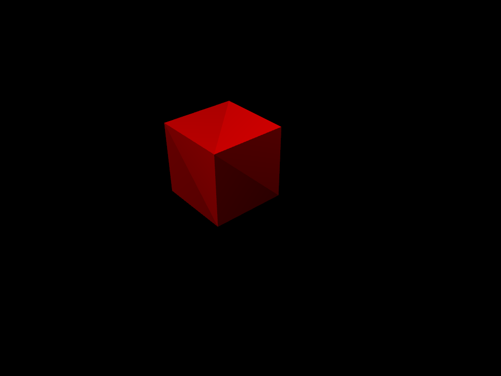

import os import signal import subprocess import platform import threading dname = os.path.abspath(getBundlePath() + "/../../build/bin/") os.chdir(dname) redCubeCommand = [] if(os.path.isfile("/opt/VirtualGL/bin/vglrun")): redCubeCommand.append("vglrun") redCubeCommand.extend(["./run_test.sh", "RedCubeTest"]) subprocess.Popen(redCubeCommand, stderr=subprocess.STDOUT, stdout=subprocess.PIPE) res = exists() type(Key.ESC) waitVanish() if(res == None): print("Failure") exit(1) print res.getScore() if(res.getScore() < .999): print("Failure") exit(2) else: print("Success") exit(0)